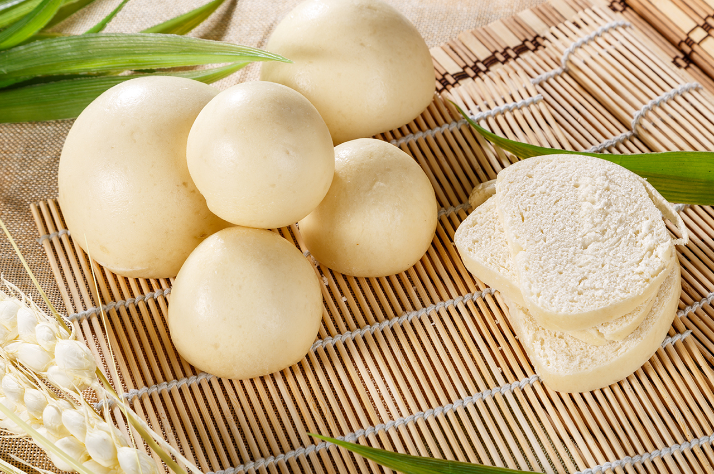

iDombolo

What is iDombolo?
Dombolo, (also known as umbhako, ujeqe, dipapata in Setswana and rostile in Xhosa), is a traditional South African steamed bread.
It is a popular staple food in many homes within South Africa. The bread is prepared in a container in a pot of boiling water.
Dombolo can be made as whole bread or in dumpling-size balls. Serve Dombolo with a succulent stew or potjie.
Ingredients
- Instant dry yeast
- Sugar
- Lukewarm water
- Flour
- Salt
Steps
- In a large bowl, combine the yeast, sugar, and lukewarm water together and allow to sit for 8 - 10 minutes or until foamy.
- Add the flour and salt and mix until well combined. Turn the dough out onto a floured surface and knead for 7 - 8 minutes or until smooth.
Place into an oiled metal bowl and allow to rise for 1 hour.
- Once doubled in size, place the metal bowl into a simmering pot of water filled a quarter of the way up.
Place the lid on and steam for 1 hour or until a skewer comes out clean.
- Make sure to keep topping up the water to ensure the water does not dry out.
- Remove the bowl from the simmering water and allow to cool slightly before removing the bread from the bowl.
Slice and serve warm with butter and a hearty stew, soup, or curry.